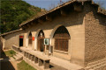
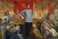
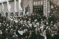
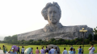
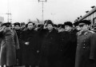
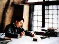
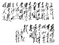
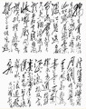
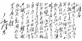
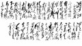

伟人风采

毛泽东旧居
这三孔接口土窑洞是毛泽东的旧居。1938年11月， 毛泽东由凤凰山迁住到杨家岭。左边一孔是寝室，中间是办公和会客室，右边是工作人员住室，右上侧的土窑洞是女儿李讷和保姆的住室。 毛泽东在这里居住期间，正是抗日战争处在最艰难困苦阶段，为指导中国革命不断取得胜利，毛泽东从事了巨大的理论工作，撰写出了《新民主主义论》《中国革命和中国共产党》《共产党人发刊词》
毛泽东朱德如何在井冈山组建“红四军”
根据中共湘南特委的决定，两军合编为工农革命军第四军。同年6月，按照中共中央的指示，各地的工农革命军一律改称为中国工农红军，工农革命军第四军改称为工农红军第四军，简称红四军。这是我们党领导的第一支规模比较大的成建制的革命武装。毛泽东的部队并为第十师，朱德的部队并为第十一师，湘南农军并为第十二师，由朱德任军长，毛泽东任党代表。党史上著名的朱毛红军由此而来。
《毛主席的话儿记心上》：唱出人民内心的歌声
随着电影《地道战》热映，插曲《毛主席的话儿记心上》广为传唱。 １９３８年５月，在总结抗战初期经验基础上，针对“中国必亡论”和“中国速胜论”以及轻视游击战的倾向，毛泽东发表了《论持久战》。在揭示抗日战争发展基本规律的同时，论述了只有实行人民战争才能赢得胜利的思想。
毛泽东是如何指挥抗美援朝战争的
从中国人民志愿军渡江那一天起，毛泽东的全副精力都集中到朝鲜战场上了。毛泽东一生指挥过无数次大大小小的战役，统帅过百万以上的大军，同时在几个战场上与敌人作战，取得一个又一个胜利。他有着高人一筹的战略指导思想和丰富的战争经验。但是指挥抗美援朝战争，对他来说毕竟是一个新的课题。
毛泽东逝世四十五周年纪念：吾辈当自强
1976年9月9日零时10分，一代伟人毛泽东在北京逝世，享年83岁。同日，新华社播发中共中央、全国人大常委会、国务院、中央军委《告全党全军全国各族人民书》，《告人民书》说：“毛泽东主席的逝世，对我党我军和我国各族人民，对国际无产阶级和各国革命人民，对国际共产主义运动，都是不可估量的损失。历史瞬间

始终坚持独立自主：毛泽东两次访苏的珍贵照片
1949年12月16日，中午12时，中共中央主席、中华人民共和国中央人民政府主席毛泽东抵达莫斯科，开始了他对苏联的第一次访问。毛泽东的这次访苏之行，使中苏两国关系跃上了一个新的台阶。《中苏友好同盟互助条约》的缔结，对于保障中国的国家安全，推动和加速中国国民经济的恢复发展与社会主义建设事业，都产生了重大的影响。
胡长保为掩护毛主席而牺牲，主席亲自为他盖被，葬在荒山上55年
胡长保应该是第一个，也是唯一一个为了掩护毛主席而壮烈牺牲的警卫员战士，他值得我们大家永远记住。胡长保的牺牲给毛主席带来的打击很大，他久久不能从这个事实中走出来，在之后的很长一段时间内，毛主席的话变少了，也变得格外沉默。“毛主席泪别胡长保”也是长征途中最令人心酸的画面之一。伟人作品

毛泽东诗词集（一）
《七律·长征》红军不怕远征难，万水千山只等闲。五岭逶迤腾细浪，乌蒙磅礴走泥丸。金沙水拍云崖暖，大渡桥横铁索寒。更喜岷山千里雪，三军过后尽开颜。
毛泽东诗词集（二）
《沁园春·长沙》独立寒秋，湘江北去，橘子洲头。看万山红遍，层林尽染，漫江碧透，百舸争流。鹰击长空，鱼翔浅底，万类霜天竞自由。怅寥廓，问苍茫大地，谁主沉浮？携来百侣曾游，忆往昔峥嵘岁月稠。恰同学少年，风华正茂；书生意气，挥斥方遒。指点江山，激扬文字，粪土当年万户侯。曾记否，到中流击水，浪遏飞舟？
毛泽东诗词集（三）
《沁园春·雪》毛泽东北国风光，千里冰封，万里雪飘。望长城内外，惟余莽莽；大河上下，顿失滔滔。山舞银蛇，原驰蜡象，欲与天公试比高。须晴日，看红装素裹，分外妖娆。江山如此多娇，引无数英雄竞折腰。惜秦皇汉武，略输文采；唐宗宋祖，稍逊风骚。一代天骄，成吉思汗，只识弯弓射大雕。俱往矣，数风流人物，还看今朝。